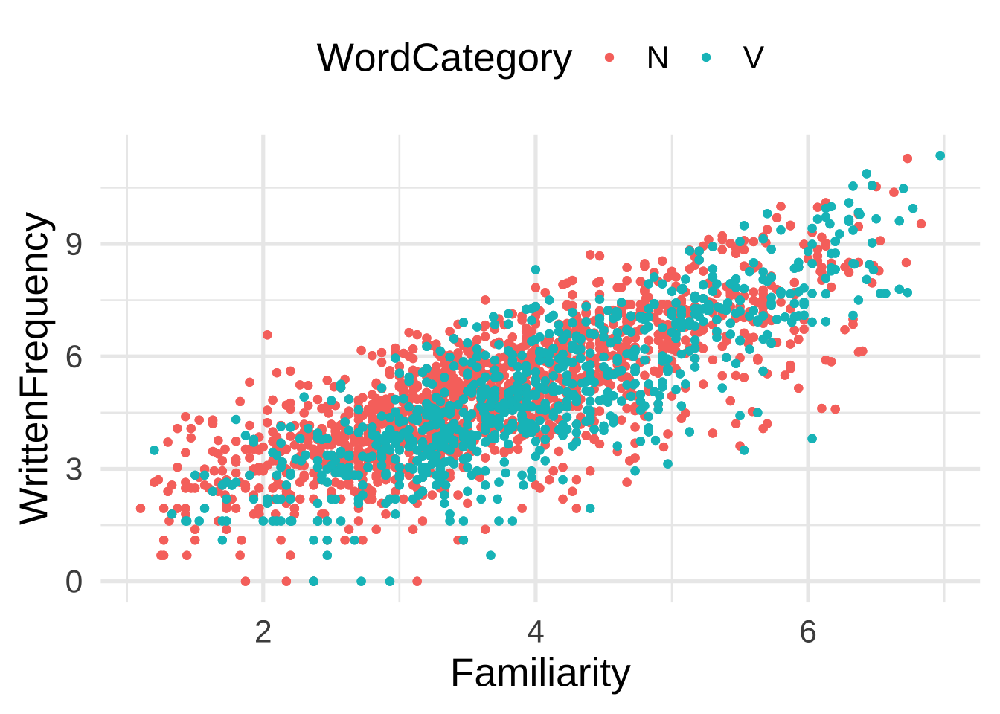
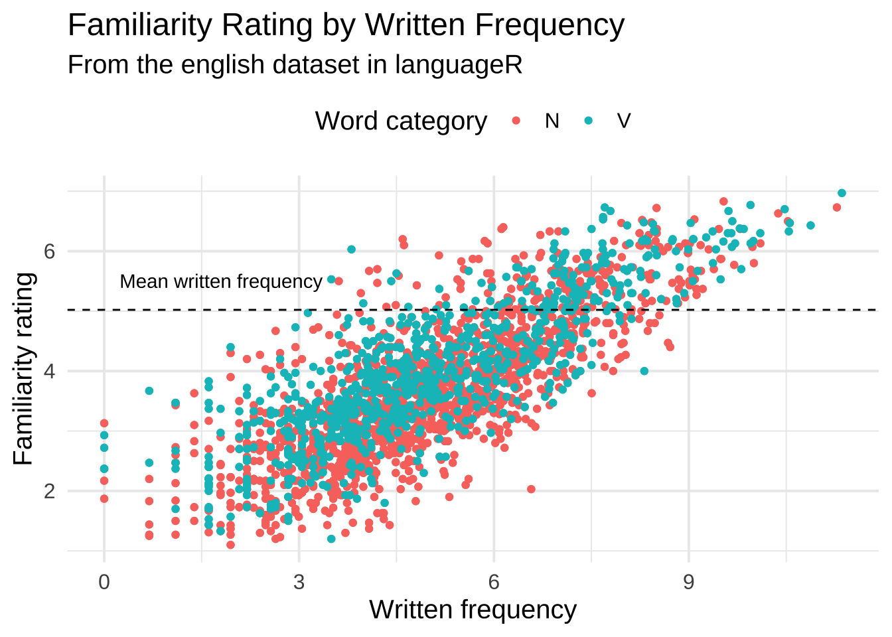

[,1] [,2] [,3]
[1,] -5 -2 1
[2,] -4 -1 2
[3,] -3 0 3Problem set 1
due Monday, September 9, 2024 at 11:59am
- Instructions
-
Upload your
.ipynbnotebook to gradescope by 11:59am on the due date. Please include your name, Problem set 1, and any collaborators you worked with in a text cell at the top of your notebook. Please also number your problems and include comments in your code to indicate what part of a problem you are working on.
Problem 1
Suppose you track the number of hours you spend studying each day for a week. Create a vector with the following values and store it as study_hours : 0 4 5 1 0 0 7. Use R’s built-in functions to compute the total number of hours you studied that week, the average number of hours studied per day, and the maximum number of hours studied on a single day. Perform a comparison operation on the study_hours vector to determine whether each day’s study hours were greater than zero.
Problem 2
Create the matrix given below. Subtract 6 from every number in the matrix and store the output as a new matrix called new_matrix. Then use subsetting to return the value in the first row and third column of new_matrix.
Problem 3
Create a data frame that looks like the one below. Return the structure of the dataframe with str(). Use subsetting such that you select the age column and return a vector (not a dataframe). Use a comparison operation on the vector to determine whether each individual is over 80 years old.
age height major score firstgen
1 30 65 cogsci 100 TRUE
2 45 66 ling 75 FALSE
3 81 72 psych 88 TRUE
4 27 59 ling 97 FALSEProblem 4
Read the documentation for the emojifont package. Install and load the package. Use the package’s search_emoji() function to find all of the emojis with hearts. Then use the emoji() function to return all of these emjois as a vector, as shown below. Finally, select your favorite emoji and visulize it with ggplot, using theme_void().
[1] "😍" "😘" "😻" "💑" "💑" "👩❤️👩" "👨❤️👨" "❤️" "💛"
[10] "💚" "💙" "💜" "🖤" "💔" "❣️" "💕" "💞" "💓"
[19] "💗" "💖" "💝" "💟" "♥️" Problem 5
Problems 5-7 make use of the english dataset in the languageR package. From the documentation:
This data set gives mean visual lexical decision latencies and word naming latencies to 2284 monomorphemic English nouns and verbs, averaged for old and young subjects, with various predictor variables.
Install and load the languageR library. Use str() to return the structure of the english dataset. Use subsetting via the $ operator and the typeof() function to return the type of the NounFrequency column.
Problem 6
Use the WrittenFrequency, Familiarity, and WordCategory columns in the english dataset to recreate (as faithfully as possible) the figure below.

Problem 7
Compute the mean of WrittenFrequency and store it in a variable called mean_written_frequency. Add a dashed horizontal line on top of the dots in your figure to indicate this value, as shown below. Also include an annotation layer above the dashed line to indicate the line is the mean written frequency.
